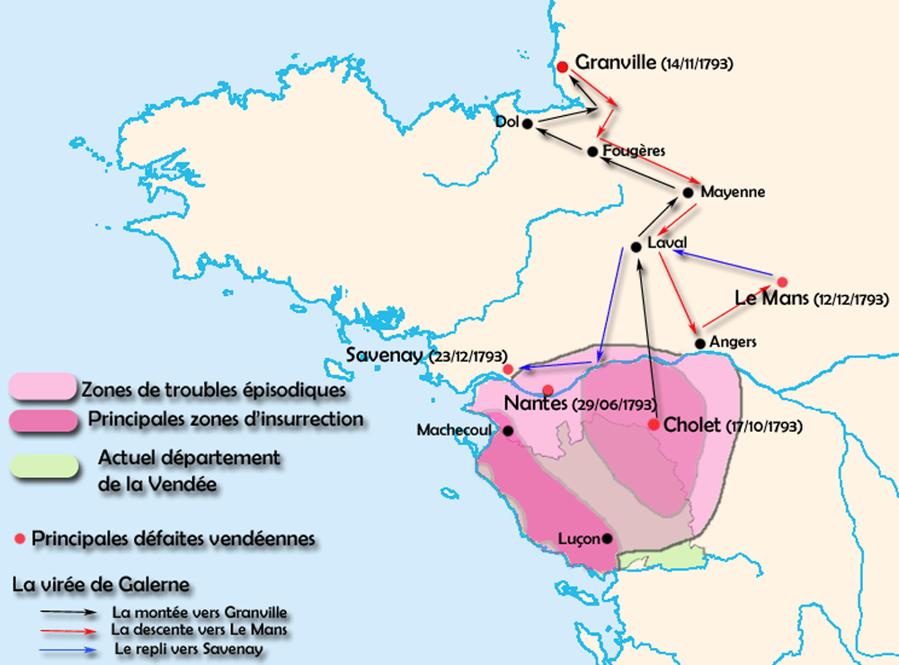

La Vendée de 1793 n'était pas celle d'aujourd'hui.
En effet, le territoire insurgé porte le nom de "Vendée militaire".
Pour mieux comprendre la situation géographique et l'ampleur des guerres de Vendée, il est essentiel d'avoir cette carte en tête.
Le territoire insurgé était effectivement bien plus grand que l'actuelle Vendée.
Image : Wikimedia Commons - Vendée Militaire